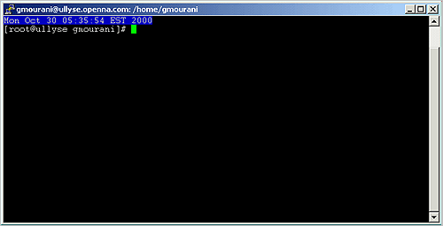

Appendix B. Tweaks, Tips and Administration tasks
Some of the tips in this section are specific to Linux systems. Most are applicable to UNIX system in general.
The du utility command: You can use the du utility to estimate file space usage. For example, to determine in megabyte the sizes of the /var/log/ and /home/ directory trees, type the following command:
Keep in mind that the above command will report the actual size of your data. Now that you know for example that /home is using 350M you can move into it and du -sh * to locate where the largest files are.
: You can add this command to your crontab so that every day you get emailed the desired disk space list, and you'll be able to monitor it without logging in constantly.
Find the route: If you want to find out the route that the packets sent from your machine to a remote host, simply issue the following command:
Where <www.redhat.com> is the name or ip address of the host that you want to trace.
Display Web pages access: To display quickly the number of times your web page has been accessed use this command:
Shut down most services altogether: As root, you can shut down most services altogether with the following command:
The above command will shut down the Apache server, Samba services, LDAP server, and DNS server respectively.
clock on the top of your terminal: Edit the profile file, vi /etc/profile and add the following line:
The result will look like:

lsof installed on your server?: If not, install it and execute lsof-i. This should list which ports you have open on your machine. The lsof program is a great tool as it will tell you which processes are listening on a given port.
commands on remote servers via ssh protocol: The ssh command can also be used to run commands on remote systems without logging in. The output of the command is displayed, and control returns to the local system. Here is an example which will display all the users logged in on the remote system.
Filename Completion: Tab filename completion allows you to type in portions of a filename or program, and then press TAB, and it will complete the filename for you. If there's more than one file or program that starts with what you already typed in, it will beep, and then when you press TAB again it will list all the files that start with what you initially typed.
Special Characters: You can quickly accomplish tasks that you perform frequently by using shortcut keys one or more keys you press on the keyboard to complete a task. For example, special characters can be used on the Linux shell like the following:
Control+d: If you are in the shell and hit Control+d you get logged off.
Control+l: If you are in the shell and hit Control+l you clear the screen.
?: This is a wildcard. This can represent a single character. If you specified something at the command line like "m?b" Linux would look for mob, mib, mub, and every other letter/number between a-z, 0-9.
*: This can represent any number of characters. If you specified a "mi*" it would use "mit", mim, miiii, miya, and ANYTHING that starts with mi. "m*l" could by mill, mull, ml, and anything that starts with an m and ends with an l.
[] - Specifies a range. if I did m[o,u,i]m Linux would think: mim, mum, mom if I did: m[a-d]m Linux would think: mam, mbm, mcm, mdm. Get the idea? The [], ?, and * are usually used with copying, deleting, and directory listings.
: Everything in Linux is CASE sensitive. This means "Bill" and "bill" are not the same thing. This allows for many files to be able to be stored, since "Bill" "bill" "bIll" "biLl", etc. can be different files. So, when using the [] stuff, you have to specify capital letters if any files you are dealing with have capital letters. Much of everything is lower case in UNIX, though.